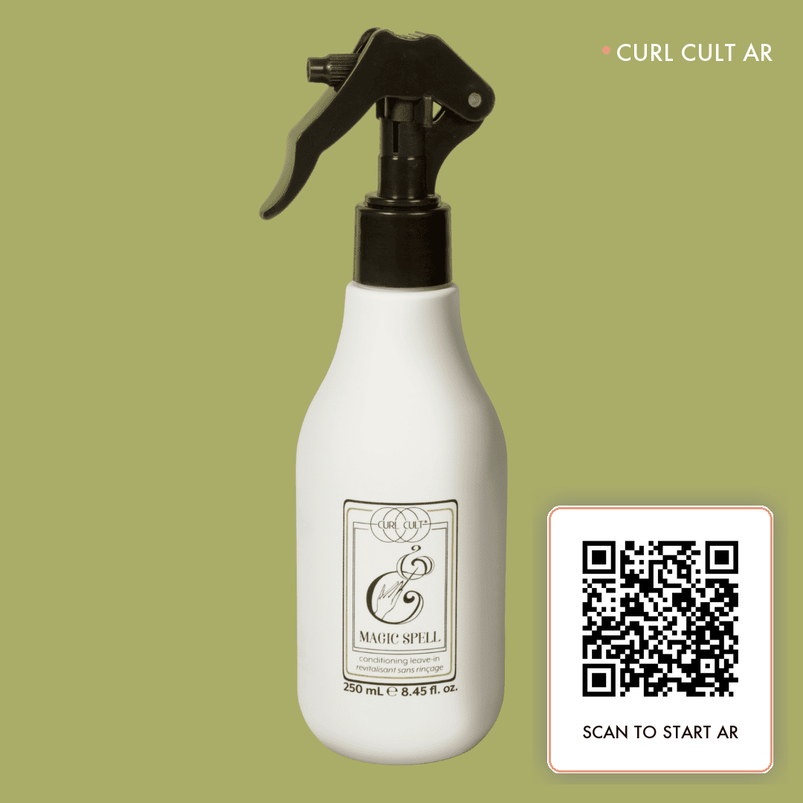

CURL CULT
CosmoProf
Scan me.
Start the Cult

1.
Open Camera
Use your phone's default camera app
2.
Point at the QR
Tap the banner to open the experience
3.
Scan the bottle
AR unfolds in 8 guided screens
Print / Save as PDF